eFlow Help assistant and eFlow Live
Desktop UI verification, 22 October 2026. Fixture screenshots use synthetic, network-isolated browser records against the application frontend; the actual authenticated app entry is labeled separately. They demonstrate layout, typed replies, source disclosure, progressive dictation and microphone-denial recovery. Real model/endpoint receipts are documented separately; these images do not claim physical microphone or two-laptop acceptance. Guide · Validation · Current microphone and latency results · Live revision and restart fix
Progressive dictation · partial words before Finish · synthetic fixture · 1440 × 1000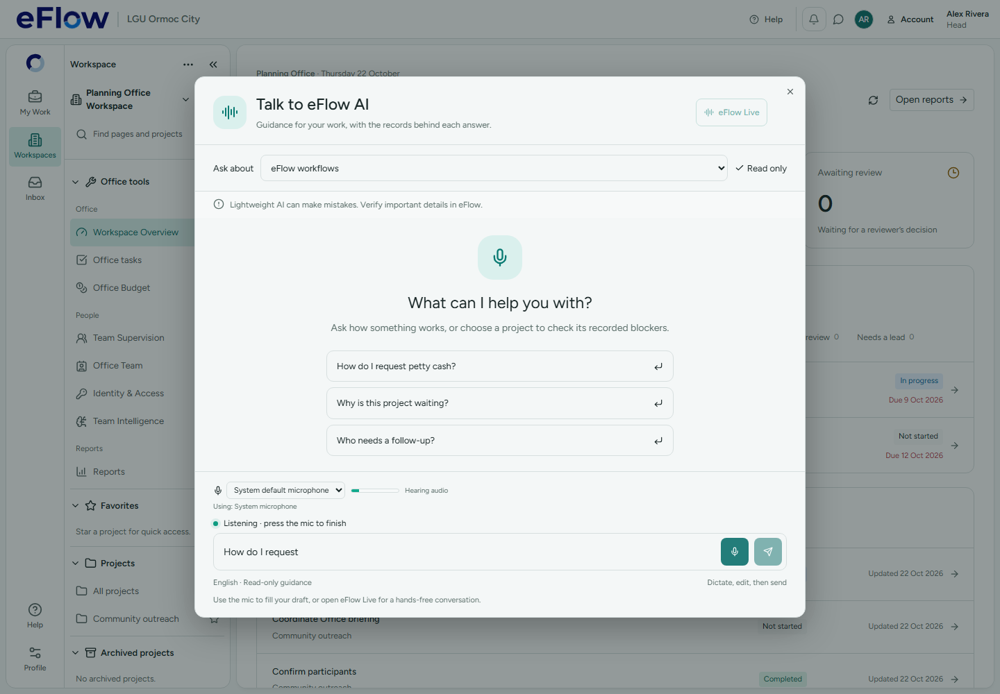
Real Chromium media/audio graph · synthetic WAV input · mocked transcription · 1440 × 1000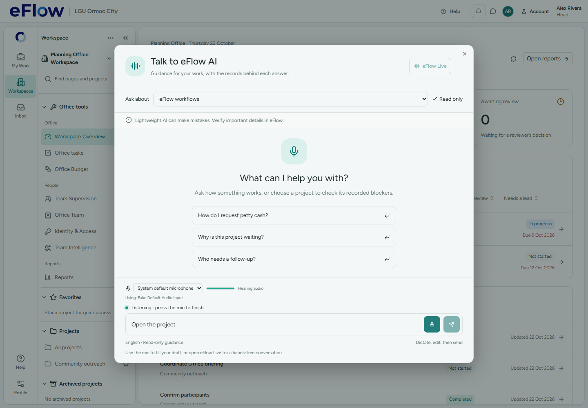
Actual authenticated app · Help entry and real gateway readiness · 1440 × 1000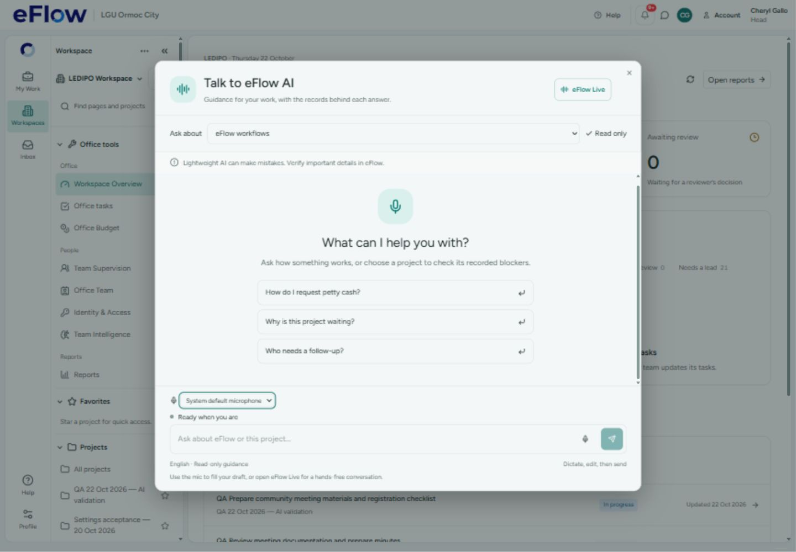
eFlow Live · listening · synthetic microphone · desktop 1440 × 1000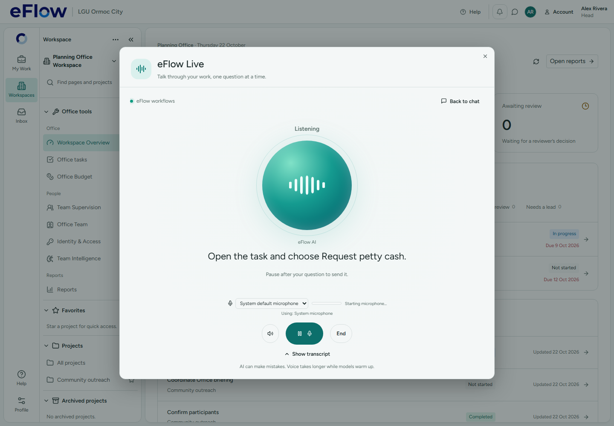
eFlow Live · 1280 × 800 · denied microphone recovery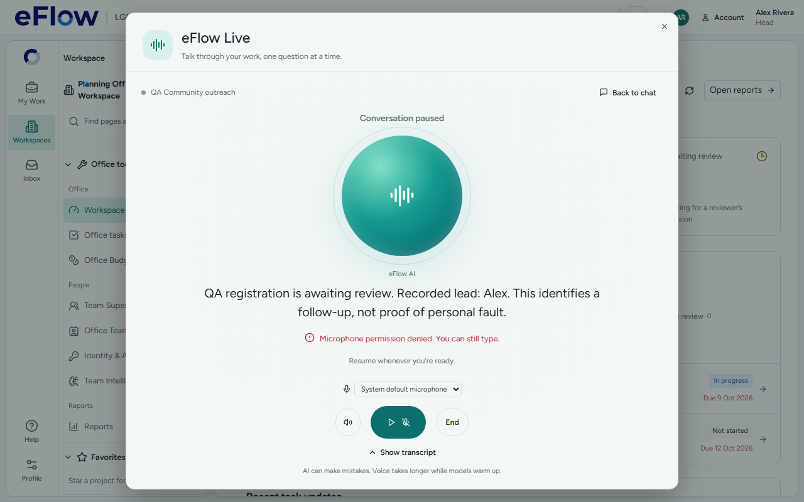
eFlow Live · 960 × 540 · constrained desktop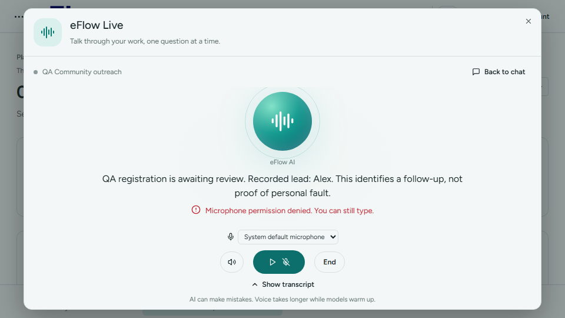
eFlow Live · 1440 × 1000 · dark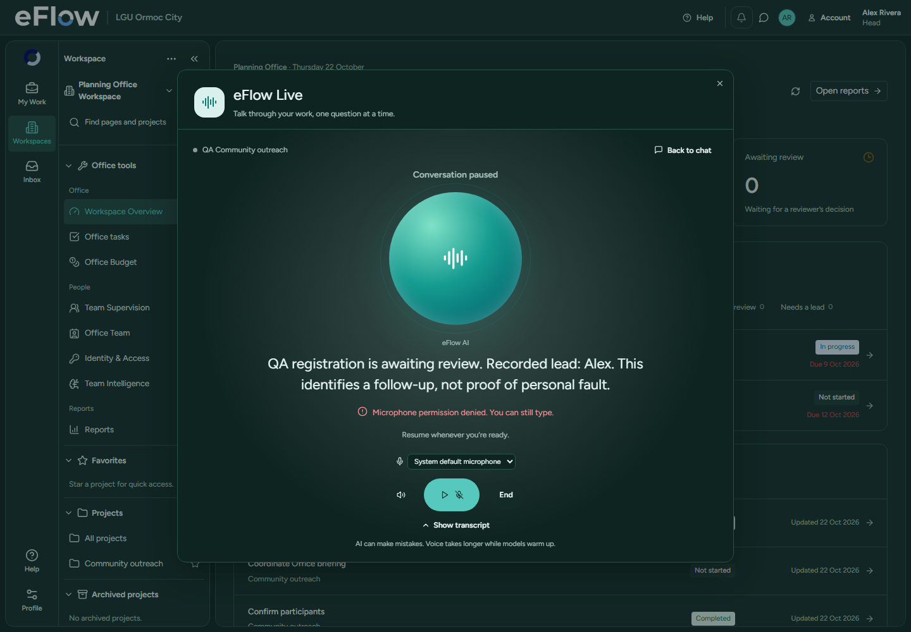
1440 × 1000 · light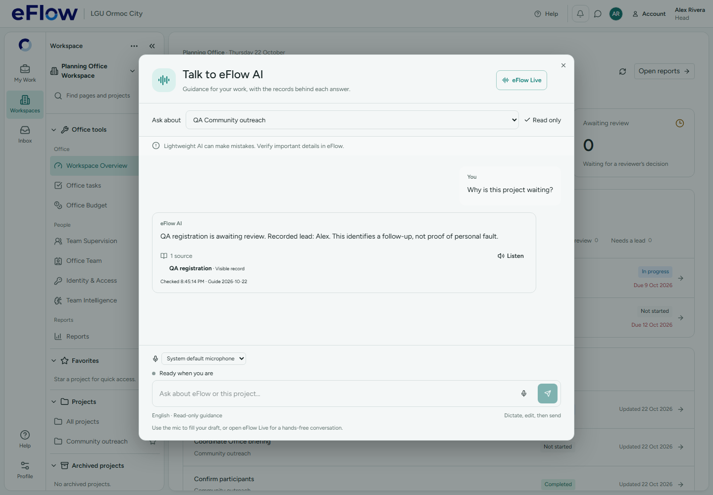
1280 × 800 · light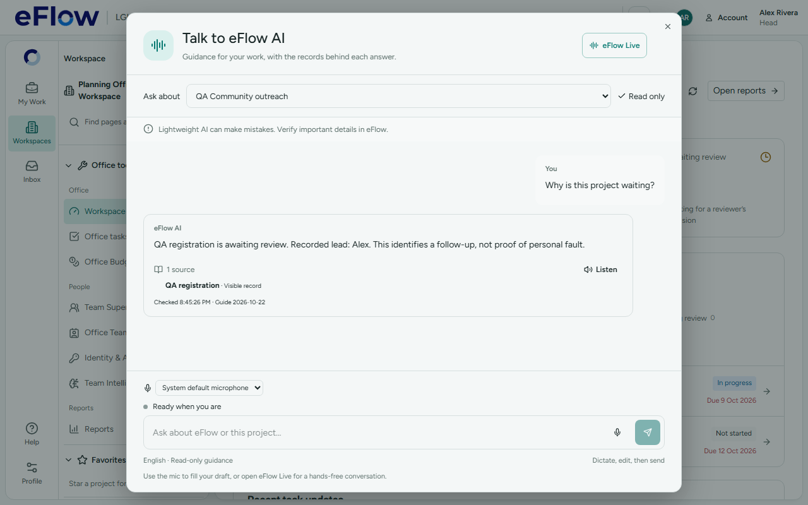
960 × 540 · constrained desktop / 200% equivalent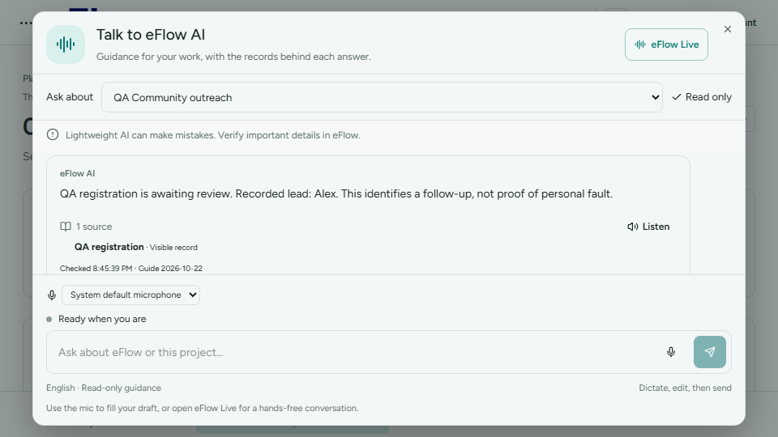
1440 × 1000 · dark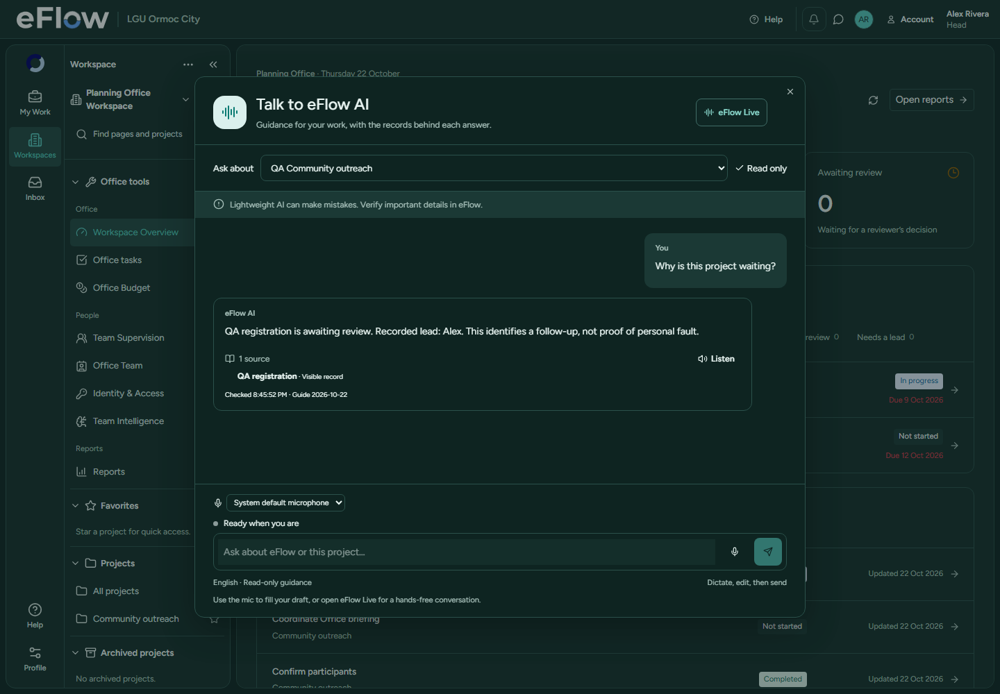